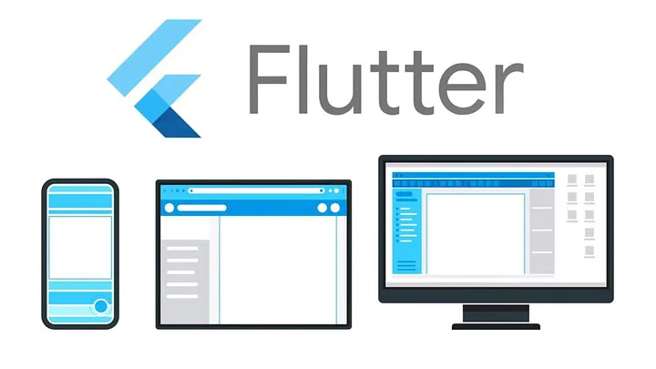
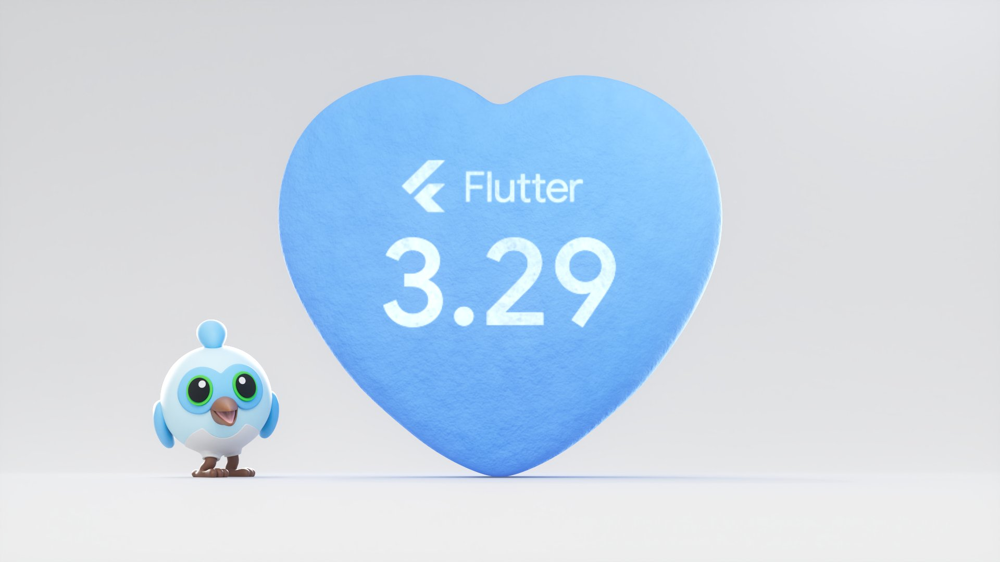

Présentation de Flutter
Table des Matières
Introduction Points Clés Actualités Récentes Mise à Jour 3.29 Qu'est-ce que Dart ? Notes PersonnellesPoints Clés
Flutter est un kit de développement logiciel (SDK) open-source créé par Google, permettant de développer des applications pour Android, iOS, Windows, Linux, macOS, et les navigateurs web à partir d'une seule base de code. Voici les points clés à retenir sur Flutter :
- Développement Multiplateforme :  Flutter permet de créer des applications natives pour plusieurs plateformes à partir d'un code source unique. Cela simplifie le processus de développement et réduit les coûts associés à la maintenance de plusieurs bases de code.
- Performance : Les applications Flutter sont compilées directement en code natif pour chaque plateforme, ce qui garantit des performances élevées sans nécessiter de module d'exécution ou de navigateur.
- Interface Utilisateur : Flutter offre une vaste bibliothèque de widgets personnalisables qui suivent les directives de conception spécifiques à chaque plateforme, permettant de créer des interfaces utilisateur attrayantes et réactives.
- Hot Reload : Cette fonctionnalité permet aux développeurs de voir instantanément les modifications apportées au code, accélérant ainsi le processus de développement et de débogage.
- Communauté et Support : Flutter est soutenu par Google et une communauté mondiale de développeurs, ce qui garantit des mises à jour régulières et un large éventail de ressources et de plugins disponibles.
Actualités Récentes sur Flutter
- Flutter News Toolkit : Ce kit réduit le temps de développement des applications mobiles jusqu'à 80 % grâce à des modules préconstruits pour des fonctionnalités critiques comme l'intégration des utilisateurs, les flux de contenu, les analyses, les notifications, et les publicités.
- Support Multiplateforme : Flutter 3 a stabilisé le support pour macOS et Linux, complétant ainsi sa feuille de route multiplateforme. Cette version inclut également le support pour Apple Silicon et un nouveau Casual Game Toolkit.
- Écosystème en Expansion : L'écosystème open-source autour de Flutter continue de croître avec de nouvelles fonctionnalités et outils pour aider les développeurs dans leur quotidien.
Mise à Jour 3.29

Actualités Récentes
Flutter continue d'évoluer avec des mises à jour régulières. La dernière mise à jour inclut des améliorations significatives dans la performance et la stabilité des applications. De plus, de nouvelles fonctionnalités ont été ajoutées pour améliorer l'expérience utilisateur et faciliter le développement.
Qu'est-ce que Dart ?

| Caractéristique | Description |
|---|---|
| Langage de Programmation | Dart est un langage de programmation développé par Google. |
| Typage | Dart est un langage à typage statique et optionnel. |
| Compilation | Il peut être compilé en JavaScript ou en code natif. |
| Utilisation | Principalement utilisé avec Flutter pour le développement d'applications multiplateformes. |
| Syntaxe | La syntaxe de Dart est similaire à celle de C++ et Java. |
Flutter est donc un choix robuste et flexible pour le développement d'applications modernes, offrant à la fois performance et efficacité.
Sources :
- Ionos.com
- flutter.dev
- frandroid.com
- infoq.com
- flutter-digest.com
- Digital Unicorn